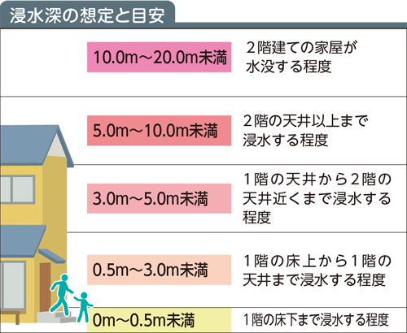
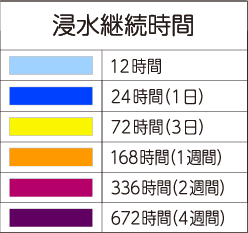
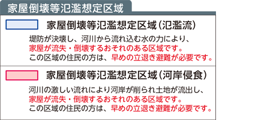
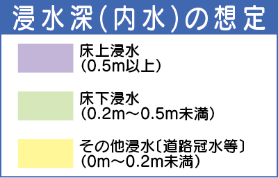

住所検索機能についてのご利用は次の事項にご同意の上、ご利用願います。
- このWeb版九十九里町ハザードマップの住所検索機能は、利用者の利便性を目的として、民間（Google社）の住所検索機能を利用して提供しています。
- 住所検索の結果は全ての正しい情報を提供するものではありません。
- 九十九里町は利用者が特定の目的等に使用されても有用であることを保証しません。また利用によって発生する直接又は間接の損失、損害等について、一切の責任を負いません。
- この住所検索機能は、上記事項にご同意され利用者の責任において利用するものとします。